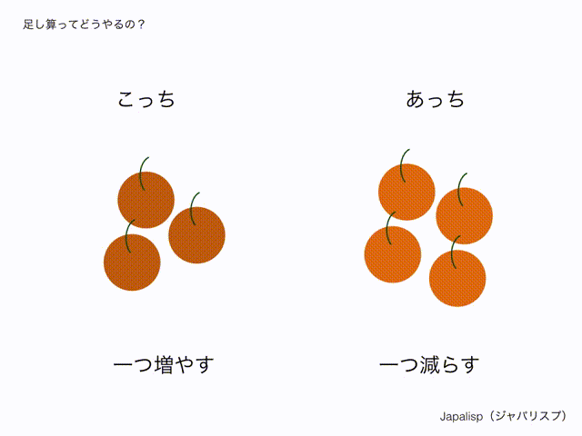

ニューヨークのプログラミングラボ Recurse Center に滞在中、ひょんなことから 日本語の話し言葉でLispっぽいプログラムが書けるJapalisp というプログラミング言語をつくりました。 つくったからには、それを何かに活かせないかと思い下記チュートリアルを書いてみました。 興味持たれた方は、作者までご連絡ください。
そう聞いてきたのは、よちよち歩きのプログラミング言語 Japalisp（ジャパリスプ）くん。 この記事の目的は、このジャパリスプくんに足し算の仕方を教えること。
足し算を、小学校で最初に習ったときまで遡って考えてみよう。
「ここに、３個のりんごがあります。
こちらには、４個のりんごがあります。
全部で、何個のりんごがあるでしょう？」
どうか 3 + 4 を思い浮かべないでほしい。 「＋」という記号をあなたが思い浮かべるのは、もうあなたが足し算を知っているから。 足し算をまだ知らないJapalisp（ジャパリスプ）くんには、どうやって足し算を教えたら良いのだろう？
一つのやり方は、おそらく自分で数えやすい順に、 「１個、２個、３個．．．６個、７個！」という風に、一つずつ指をさしながら数えるやり方だろう。
このやり方は要するに、
こっちは３個、こっちは４個、と数えていたものを、
まとめて数えるようにすること。
ってことは、別々にあったものを「くっつける」と、足し算ができるはずだ。よしっ！
「Japalispくん！左のりんごと、右のりんごをくっつけて数えてごらん！」
Japalispくんは、一つずつだったら、増やしたり減らしたりできることが分かった。 なので、１つずつ、えっちらほっちらとりんごを移動させてみよう。

これだけわかれば、もう君はJapalisp（ジャパリスプ）くんに足し算をお願いすることができる。
次の文章が、実際に彼に「僕の足し算」をやってもらうためのお願い文。
この文章を、Japalispくんが住む遊び場にコピペしてみよう。なにが返ってきたかな？
僕の足し算っていうのは、
こっちとあっちを使って、
もしあっちが0ならこっちを教えてね、
それ以外なら
こっちで一つ増やした数と、あっちで一つ減らした数で僕の足し算をし続けるんだよ。
「僕の足し算だね！」と返ってきたら、とりあえずは安心して。 あなたが伝えたお願いが、Japlispくんに伝わったという合図だから。 ここからがJapalispくんのすごい所。 彼は、画面を閉じるまでは、僕の足し算の仕方を決して忘れることはない。
まずは、彼が足し算を正しくできるか確かめてみよう。 お願い文をコピペした遊び場で、「10と4で僕の足し算してみて！」って言ってみて。 なんて返ってきたかな？
「14だよ！」って返ってきたなら、彼は僕の足し算を理解してくれているってことだ！
やったね！
もしかしたら、10と4で足し算ができるのは何てことないかもしれない。
でも、「78と39で僕の足し算」は？
「5678と1234で僕の足し算」は？
彼にとっては、これも同じくらい何てことない計算だ。それもこれも、君が僕の足し算のやり方を、彼に教えてあげたから。 おめでとう！
ここで一旦休憩しよう。と思ったら、興奮したJapalispくんは、次のこんなことを聞いてきた。
ふぅ、ここから先は、読者のあなたに、Japalispくんに計算を教える役目を担ってほしい。 もしあなたのJapalispくんの遊び場で、Japalispくんに引き算のやり方がきちんと伝わったと思ったら、 「僕の引き算っていうのは、、」から始まるお願い文を、下の何らかの方法で僕に教えてほしい。
1. Twitterで、#僕の引き算 をつけてつぶやく。
2. Japalispくんの生みの親にメールを送る。
3. GithubでIssueとして回答を書く（バグがあると思ったらプルリクもね！）
Japalispくんはまだ足し算を習ったばかりだけど、僕たちがお願い文を正しく下記さえすれば、
ものすごい量の計算をすぐにやってくれるようになる。
下にあげるのはそのほんの一例。
・掛け算
・大小関係
・イコール
・べき乗
・割り算
・階乗
ここまで読んだあなたなら、Japalispくんにお願いする方法のコツを、すぐに掴めるはず。
計算そのものが楽しいって感覚が、すぐにやってくると思う。
Japlispの生みの親として、あなたの解答を心待ちにしています。